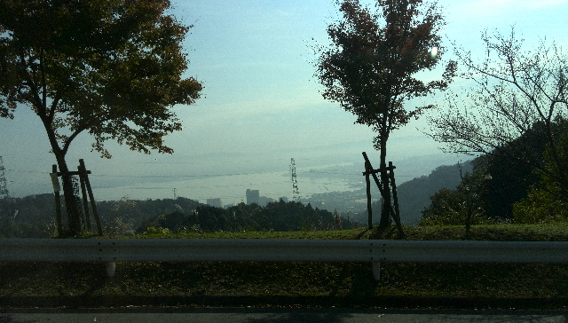

カテゴリ:
11/04 - 10にかけて、高野山参拝・京都のお寺参拝・友人の結婚式参列をしてきました。
11/01-03の社内研修での合宿で、なぜか風邪をひいてしまったようで、体調不良を薬で抑えこんで巡ってきました。
11/04-05 : 高野山参拝(真言宗)
11/04は移動だけで終わりでした。朝10:30頃の東京初新幹線に乗り、新大阪で降りて新今宮まで乗り継ぎ、南海鉄道の特急こうやに接続しました。特急といっても、山の中に入ると速度も出せませんので普通列車と同じ速度でゆっくりと進みます。極楽橋という駅を降りるとすぐケーブルカーに接続しますので、その先が高野山です。
高野山といっても「高野山」という山があるわけではなく、寺社が固まっている地域全体を「高野山」と呼んでます。
泊まったのは「不動院」でした。
高野山・皇室縁の宿坊・不動院オフィシャルウェブサイト
http://www.fudouin.or.jp/shukubou/index.html
高野山は世界遺産に登録されており、外国からの観光客も多数見かけました。不動院の中でも夕食を知らせる時、係の人が「dinner is ready」と英語で案内をしてました。
11/05で一日かけて、大門・金剛峯寺・根本中堂・奥の院と回れました。女人堂と徳川家霊廟はスキップしました。
バスで移動すると楽ではあるんですが、高野山の東西をつなぐ真ん中の道路が、混雑してました。国道371が走ってますので生活に使われていることに加え、観光バスも出入りしてます。足に特別の不安が無ければ、徒歩でも問題ないと思います。
・・・ただ、別の問題として道路が混み合いますので、排気ガスもそれなりにあるんですよね・・・。坂本が歩きまわってた日は風が結構あったのでそんなに気にならなかったのですが、気になる人はマスク持ってっても良いかもです。（不動院は道路から奥まったところにあったのでその点では助かりました）なお奥の院にてお土産用お守りを2GET。
全部の見どころポイントを回り、さらに精進料理や阿字観など体験コースも楽しむのであれば、正味二日あればまず十分かと。
実は阿字観やってみたかったのですが、もう喉と鼻水がひどくてとても瞑想系の作業ができる状況ではなかったので、諦めました。
あと、お昼ごはんについてはお寺によってはお昼だけの精進料理コースをやってるところがあります。また、他にも喫茶店とか観光客向けの食事処も道路沿いに並んでますので、不便は感じません。
帰りのケーブルカーでは、特急への接続を狙うのであれば早め早めで動いたほうが良いです。
11/05では15:00くらいにはひと通り見終わり、そのままケーブルカー→特急こうやでまた新今宮でJRに接続、大阪から京都へ移動し、京都で確保しておいたホテルにチェックインしました。夕食は体調が悪かったため、栄養をつけるためJR京都駅ビル内にあったPRONTOで暴食しました。
11/06 : 京都 - 比叡山(天台宗)
この日は確か、扁桃腺が異常に痛くて、市販薬で無理やり押さえつけて動きました。というかもう、鼻水と咳がひどくて、1時間ほどうつらうつらできたと思ったら鼻水と痰で苦しくなってうがいをして～のエンドレスでまともに寝れてない状態でした。
京都駅から比叡山まで直通のバスが運行されてましたので、それに乗り込みました。途中、天気が良かったため、琵琶湖の景色を見ることが出来ました。

比叡山は大きく4つのエリアに分かれます。東塔、西塔、比叡山頂、横川です。歩きでも回れないでもないのですが、高野山では数百m以内の距離感でしたが、比叡山だと数kmになってしまうため、歩きで回るのはリスキーです。またドライブウェイという風景を楽しむのを主眼にした道路で結ばれている、つまり、自動車のための道路になってしまってるんですよね。地図をよく見ると徒歩散策用の小道もあるにはあるようですが、いずれにしても徒歩では時間がかかりすぎます。比叡山の見どころをバスで巡回してくれるシャトルバスが運行されてましたので、それを使って移動しました。なお横川中堂にてお土産用のお守りを2GET。
今回は体調も悪く、また、シャトルバスや京都とつなぐバスの便数も多くはなかったため、東塔エリアと横川中堂だけにとどめて早めに撤退しました。
京都と比叡山をつなぐバス、および比叡山内を巡回するシャトルバスについては、運行してない時期もあるようです。また、運行していても平日と土日で本数が変わったりしますので、事前のチェックが必須です。運行してなかったら・・・気力で徒歩で移動するか、タクシーとかあるいは京都駅から当日募集の観光ツアーバスが出てますので、その辺りを使うことになるかと。
延暦寺会館の方で食事or宿泊予約の方に限り、座禅や写経体験もさせてもらえるらしいですが、時間調整がシビア過ぎたのと体調も悪いのとで見送りました。
この日も、帰ってきたら体力の限界でした。夕食でまたバスとか電車を使うのも苦痛でしたので、ホテル近くの創作京都料理っぽい居酒屋に入ったら大正解で、気になってた料理だけをピンポイントで食べることができました。
この夜もやはり鼻水と痰と、あと咳が止まらなくなって、何度も夜中起きてうがいして痰を切って・・・を繰り返したのでほとんど眠れず。
11/07 : 京都 - 西本願寺・東本願寺(浄土真宗)、三十三間堂、智積院(真言宗智山派総本山)、東寺(真言宗)
高野山・比叡山と歩きまわってたダメージがココに来て表出、でもホテルからそんなに距離も無いし、と徒歩で移動を開始しました。ちなみに鼻水は落ち着いたものの、痰がからんだ咳が時々止まらなくなるなど、やっぱりまだ市販薬は必需品でした。
西本願寺、東本願寺とも、日本ならではの巨大木造建築という感じでした。東本願寺は阿弥陀堂が修復工事の途中で、御影堂だけ見ることが出来ましたがそれでも、「え、これ全部木造？」というくらいの大きさでした。
三十三間堂は京都観光なら定番ですが、高校時代の修学旅行では行ってなかったので、今回ちょうどルート上にあったので行ってみました。
智積院については実家のお寺がこちらの系列に属しているため、総本山はどんなもんじゃろか、という感じで寄ってみました。お寺からの広報誌で時々みかける写真の通りという感じでした。
この時に智積院の宿坊にあったレストランでお昼、「山ふぐのお寿司」というのがあって何だろうとおもったら、こんにゃくのことを「山ふぐ」と呼んでたようです。なんでも食感がふぐと似てるからだとか。なお同宿坊にてお土産用のお守りを1GET。
東寺については想像以上に境内が広く、全部は見きれなかったですね。どうにか特別公開されていた五重塔の1階部分は見ることができました。どうでもいいんですが、松永久秀が焼き討ちしたの、ずっと「東寺」だと勘違いしてました・・・今Wikipedia見たら「東大寺」の方だったよ・・・なんか解説板とかパンフレットにもそうした話かかれてなくて、変だな～と思ってたんだけど・・・。
夕食は、これまた咳が止まらなかったりとヒドイ状況でしたので遠出はせずに、京都駅ビルでネギたっぷりのラーメンを食べて済ませました。
11/08 : 京都から岐阜へ移動
京都から岐阜への移動なんですが、ちょっと手間かかりました。まず京都から米原に琵琶湖伝いに北上して、米原から大垣行に接続、大垣から岐阜へ、という乗換になってしまいました。東海道線を使いましたが、時間によっては米原～岐阜まで直通を捕まえられたかも。
当初は11/09の熱田神宮会館での結婚式参列のため、名古屋で宿を取る予定だったんですが、嵐のライブとぶつかってたらしく、名古屋駅周辺のビジネスホテルが軒並み抑えられてしまってまして、やむなく岐阜までずらしてみたんです。
これが意外に大当たりで、温泉はありますし、朝食バイキングも地方料理を全面に出してきて良かったです。またベッドがちょうどよい固さで、ようやく休めたかな・・・という感じ。
駅前の観光協会のパンフレット見てみたら、斎藤道三から受け継いで織田信長のお城があったんですね。他にも長良川での鵜飼文化があったりと、結構見どころは多そうでした。
咳がまだひどく、当初予定でも無理して岐阜を観光する予定は無かったことから、宿でおとなしくダウンしてました・・・。
11/09 : 大学時代の友人の結婚式参列
今回の旅行のきっかけとしては、大学時代の友人の結婚式にご招待されたことでした。「どうせなら長めの休みをとってみようか」というのと、日本仏教のルーツに触れてみたい、ということで高野山と京都を回ってみることになりました。
ということで結婚式参列が本来の目的で、熱田神宮会館で神前結婚となりました。ちょうど七五三参りとかぶってたらしく、大勢の衆目の中で無事結婚式が執り行われました。
まだ咳と痰が収まってませんでしたが、なんとか薬でごまかせる程度にはなってたのでよかったです。
二次会とかで遅くなるかも・・・ともう一泊確保していたのですが、5時位でお開きになり、特にその後の予定もなく普通に岐阜に戻りました。
11/10 : 帰宅
あとは帰宅でした。
感想とか
- 高野山の奥の院とか、やっぱり解説ガイド役いた方が楽しめそう。しかし、今でもそうとうな山奥に位置しているので、当時はかなりの覚悟がないと高野山までは行かなかったんだろうなと。
- 比叡山は自動車であちこち好きなように巡れると楽しそう。バスだとどうしても時間を気にする必要があり、ぷらぷら出来ない。
- 京都の料理って、一度油で揚げたものに出汁汁をかけるの、ひとつのパターンなんですかね。
- 今度岐阜に行くときは、岐阜だけでじっくり観光したいです。今回は泊まるだけの素通りでしたので。
- 他にも仏教面についてアレコレ感想はあるんですが、何分素人の浅知恵なので、うっかり表に出して目をつけられると大変な事になりますので控えておきます。